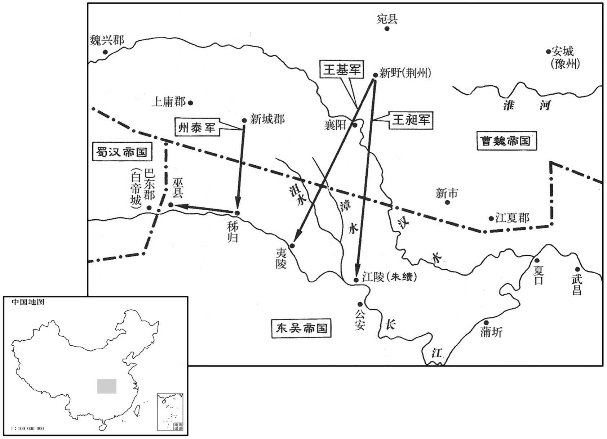

公元250年资治通鉴：本年记事、原文与白话对照
按原书编年位置阅读；追叙和史论不等于本年发生的事件。白话采用所据译本，缺译不以生成译文补齐。
卷75 · 本年记事
公元250年 · 魏烈祖明皇帝嘉平二年
二年〔（庚午、二五○）〕
上传原文的注释括号有异常，字符原样保留；无法可靠划分的段落默认全文显示。
本年事件索引（现代整理）

本年形势与背景参考图
夏，五月，以征西将军郭淮为车骑将军。
夏季，五月，任命征西将军郭淮为车骑将军。
初，会稽潘夫人有宠于吴主，〔会，古外翻。〕生少子亮，〔少，诗照翻。〕吴主爱之。全公主既与太子和有隙，〔事见上卷正始六年。〕欲豫自结，数称亮美，以其夫之兄子尚女妻之。〔为后孙綝杀尚废亮迁全公主张本。数，所角翻。妻，七细翻。〕吴主以鲁王霸结朋党以害其兄，心亦恶之，〔恶，乌路翻。〕谓侍中孙峻曰：「子弟不睦，臣不分部，〔分部，谓各分部党，若汉甘陵南北部。〕将有袁氏之败，〔事见六十四卷建安七年。〕为天下笑。若使一人立者，安得不乱乎！」遂有废和立亮之意，然犹沈吟者历年。沈吟者，欲决而未决之意，今人犹有此语。沈，持林翻。〕峻，静之曾孙也。〔孙静，坚之季弟，见六十二卷建安元年。〕
当初，会稽郡的潘夫人受到呈王的宠幸，生下少子孙亮，吴王十分喜爱他。全公主既已与太子孙和有矛盾，就想预先奉承结交孙亮，于是常常称赞孙亮之美，并把她丈夫之侄全尚的女儿嫁与孙亮为妻。吴王因鲁王孙霸结交朋党来陷害自己的兄长，所以心中十分厌恶他，就对侍中孙峻说：“子弟之间不和睦，臣下就会分党分派，这样就将出现像袁绍兄弟那样的失败，而被天下之人耻笑。假若只立一人的话，怎能不乱呢？”从此就有了废孙和立孙亮的意思，但在数年间仍然未拿定主意。孙峻是孙静的曾孙。
秋，吴主遂幽太子和。〔骠骑将军朱据谏曰：「太子，国之本根；加以雅性仁孝，天下归心。昔晋献用骊姬而申生不存，注已见前。〕汉武信江充而戾太子冤死，〔事见二十二卷汉武帝征和二年。臣窃惧太子不堪其忧，虽立思子之宫，无所复柔矣！」吴主不听。据与尚书仆射屈晃〔屈，居勿翻。〕率诸将吏泥头自缚，连日诣阙请和；吴主登白爵观，见，甚恶之，〔白爵观在建业宫中。观，古玩翻。〕槉据、晃等「无！」，急遽不谛细也。〕无难督陈正、五营督陈象各上书切谏，〔吴主置左右无难营兵，又置五营兵，各置督领之。〕据、晃亦固谏不已；吴主大恕，族诛正、象。牵据、晃入殿，据、晃犹口谏，叩头流血，辞气不挠；〔挠，奴教翻。〕吴主杖之各一百，左迁据为新都郡丞，晃斥归田里，群司坐谏诛放者以十数。遂废太子和为无人，徙故鄣，〔故鄣县属丹阳郡。贤曰：秦鄣郡所治也，在今湖州安吉县界。师古曰：鄣，音章。〕赐鲁王霸死。杀杨竺，流其尸于江，又诛全寄、吴安、孙奇，皆以其党霸谮和故也。〔党霸谮和事，见上卷正始六年。〕初，杨竺少获声名，〔少，诗照翻。〕而陆逊谓之终败，劝竺兄穆令与之别。〔别彼列翻，分也。〕及竺败，穆以数谏戒竺得免死。〔数，所角翻。〕朱据未至官，中书令孙夕以诏书追赐死。
两版字句有差异，建议核对原文。
秋季，吴王终于幽禁了太子孙和。骠骑将军朱据进谏说：“太子是国家的根基；加之平素性情仁和孝敬父母，所以天下之人都爱戴他。从前晋献公宠幸骊姬而太子申生不能存活，汉武帝听信江充之言而戾太子蒙冤死去，我害怕太子不堪忍受其忧郁，到那时您即使象汉武帝那样建立思子之宫，恐怕也无可挽回了！”吴王不听。朱据与尚书仆射屈晃，率领各个文官武将用泥涂头自行绑缚，连日到宫门跪求放了孙和；吴王登上白爵观，见到他们，十分厌恶，就命令朱据、屈晃等人“不许这样急匆匆的”。无难督陈正、五营督陈象各自上书直切进谏，朱据、屈晃也仍然坚持进谏不止；吴王勃然大怒，诛杀了陈正、陈象及其家族。又把朱据、屈晃带入殿中，二人仍然口谏不止，叩头流血，言辞声调毫不软弱，吴王下令各责打他们一百杖，又把朱据降职为新都郡丞，把屈晃罢官退居乡里，各个官吏因进谏获罪被诛杀流放的数以十计。吴王终究还是把太子孙和废为平民，迁居到故鄣县，又赐鲁王孙霸自杀。杀了杨竺，把尸体扔到江中，又诛杀了全寄、吴安、孙奇，都是因为他们与孙霸勾结并诬陷孙和的缘故。当初，杨竺年轻时很有名气，而陆逊认为他终究会毁了自己，并劝说杨竺之兄杨穆与他分家。杨竺出事，杨穆因多次劝阻告诫杨竺而得以免死。朱据还没有到达任所，中书令孙弘就奉诏书追上他赐罪。
冬，十月，庐江太守文〔【章：甲十六行本「文」上有「谯郡」二字；乙十一行本同；张校同。】〕钦伪叛，以诱吴偏将军朱异，〔诱，音酉。〕欲使异自将兵迎己。异知其诈，表吴主，以为钦不可迎。吴主曰：「方今北土未一，钦欲归命，宜且迎之。若嫌其有谲者，〔谲，古穴翻。〕但当设计纲以罗之，盛重兵以防之耳。」乃遣偏将军吕据督二万人与异并力至北界，〔北界，谓魏、吴分界之地，在魏庐江郡南，于吴为北。〕钦果不降。〔降，户江翻。〕异，桓之子；据，范之子也。
冬季，十月，庐江太守、谯郡人文钦佯装背叛，用以诱惑吴国偏将军朱异，想要让朱异亲自领兵来迎接他。朱异知道他是诈降，就给吴王上奏表章，认为不能迎接文钦。吴王说：“如今北方领土尚未统一，文钦想要归降我国，应该去迎接他。如果怀疑他是诈降的话，只要设计网罗他，发重兵加以防备就行了。”于是就派遣偏将军吕据据率领二万人与朱异一起到达北部边界，文钦果真不来投降了。朱异是朱桓之子，吕据是吕范之子。
十一月，大利景侯孙礼卒。〔据孙礼传，礼封大利亭侯。〕
十一月，大利景侯孙礼去世。
吴主立子亮为太子。
吴王立其子孙亮为太子。
吴主遣军十万作堂邑、涂塘以淹北道。〔堂邑县，前汉属临淮郡，后汉属广陵郡，魏、吴在两界之间之间为弃地。贤曰：堂邑，今扬州六合县。杜佑曰：扬州六合县，春秋楚之棠邑汉为堂邑。淹北道以绝魏兵之窥建业，吴主老矣，良将多死，为自保之规摹而已。「涂」，当作「涂」；读曰滁。〕
吴王派遣十万大军进驻堂邑、涂塘二县，以占领通往北部的道路。
十二月，甲辰，东海定王霖卒。〔谥法：纯行不爽曰定；安民法古曰定。〕
十二月，甲辰（二十七日），东海定王曹霖去世。
征南将军王昶上言：「孙权流放良臣，〔良臣，谓朱据等。昶，丑两翻。〕适庶分争，〔适，读曰嫡。〕可乘衅击吴。」朝廷从之，遣新城太守南阳州泰袭巫、秭归，〔州，姓也；泰，名也。晋有州绰。风俗通云：其先食采于州，因氏焉。〕荆州刺史王基向夷陵。〔魏荆州刺史与征南府并屯宛，时已徙屯新野。〕昶向江陵，引竹焴为桥，渡水击之。〔焴，居登翻，大索也。吴引沮漳之水浸江陵以北之地，以限魏兵，故昶为桥以渡水。〕吴大将施绩，夜遁入江陵，〔绩，朱然之子也。然本施氏，朱治以为子，魏人本其所自出之姓称之。〕昶欲引玫平地与战，乃先遣五军按大道发还，使吴望见而喜，又以所获铠马甲首环城以怒之，〔铠，可亥翻。环，音宦。〕设伏兵以待之。绩果来追，昶与战大破之，斩其将锺离茂、许旻。
征南将军王昶上书说：“孙权流放良臣，嫡子与庶子争权夺利，我们可乘其内部分裂之机进攻吴国。”朝廷采纳了这个意见，派遣新城太守南阳人州泰袭击巫县、秭归，荆州刺史王基发兵夷陵。王昶发兵江陵，以竹索为桥，渡河进攻。吴国大将施绩，夜里逃入江陵城，王昶想把他引入平地再与之战，于是先派遣五军人马从大道返回，使吴军望见而高兴，又把缴获的铠甲马具等物丢弃在城的四周以激怒吴军，然后埋伏下兵力以等待敌人出击。施绩果然中计率军来追击，王昶与他交战，大破敌军，并杀了吴国的将领钟离茂、许。
汉姜维复寇西平，不克。〔复，扶又翻。〕
蜀汉的姜维再次进犯西平，未能获胜。